<!DOCTYPE html>
<html>

<head><meta name="generator" content="Hexo 3.9.0">
    <meta charset="utf-8">
    
    <title>【BugKuCTF】靶场部分writeup | Hu5k7&#39;s Blog</title>
    <meta name="viewport" content="width=device-width, initial-scale=1, maximum-scale=1">

    

    

    

    <link rel="stylesheet" href="/dist/build.css?v=1.5.0">

    <script>
        window.aomori = {
            
        }
    </script>

</head></html>

<body>

  <div class="container">
    <header class="header">
        <div class="header-type">
            
            <div class="avatar avatar-sm">
                
            </div>
            
            <a href="/">Hu5k7&#39;s Blog</a>
            
        </div>
        <div class="header-menu">
            <div class="header-menu-inner">
                
                <a href="/">Home</a>
                
                <a href="/archives">Archives</a>
                
                <a href="/friends">Friends</a>
                
            </div>
            <div class="header-menu-social">
                
            </div>
        </div>

        <div class="header-menu-mobile">
            <div class="header-menu-mobile-inner" id="mobile-menu-open">
                <i class="icon icon-menu"></i>
            </div>
        </div>
    </header>

    <div class="header-menu-mobile-menu">
        <div class="header-menu-mobile-menu-bg"></div>
        <div class="header-menu-mobile-menu-wrap">
            <div class="header-menu-mobile-menu-inner">
                <div class="header-menu-mobile-menu-close" id="mobile-menu-close">
                    <i class="icon icon-cross"></i>
                </div>
                <div class="header-menu-mobile-menu-list">
                    
                    <a href="/">Home</a>
                    
                    <a href="/archives">Archives</a>
                    
                    <a href="/friends">Friends</a>
                    
                </div>
            </div>
        </div>
    </div>

</div>

  <div class="container">
    <div class="main">
      <section class="inner">
        <section class="inner-main">
          <div class="post">
    <article id="post-ckcfwogu000074wmor6ha5uk4" class="article article-type-post" itemscope
    itemprop="blogPost">

    <div class="article-inner">

        

        
        <header class="article-header">
            
  
    <h1 class="article-title" itemprop="name">
      【BugKuCTF】靶场部分writeup
    </h1>
  

        </header>
        

        <div class="article-more-info article-more-info-post hairline">

            <div class="article-date">
  <time datetime="2019-05-20T00:00:00.000Z" itemprop="datePublished">2019-05-20</time>
</div>

            
            <div class="article-category">
                <a class="article-category-link" href="/categories/CTF/">CTF</a>
            </div>
            

            
            <div class="article-tag">
                <ul class="article-tag-list"><li class="article-tag-list-item"><a class="article-tag-list-link" href="/tags/CTF-Web-Note/">CTF-Web-Note</a></li></ul>
            </div>
            

            
        </div>

        <div class="article-entry post-inner-html hairline" itemprop="articleBody">
            <h1 id="0x00-介绍">0x00 介绍</h1>
<p>开始做一些CTF题目了。打算在高职比赛玩玩CTFxD</p>
<a id="more"></a>
<p>地址:<a href="https://ctf.bugku.com/challenges" target="_blank" rel="noopener">https://ctf.bugku.com/challenges</a></p>
<ul>
<li>
<h3 id="WEB篇"><strong>WEB篇</strong></h3>
<h4 id="web2">[<code>web2</code>]</h4>
<p>这种类型直接看源码 F12或者Ctrl+U</p>
<p>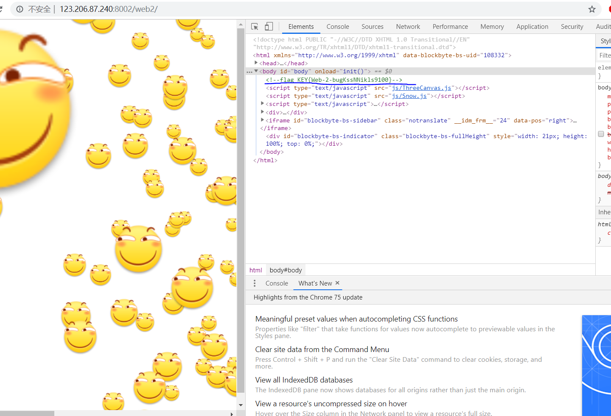</p>
</li>
</ul>
<h4 id="计算器">[<code>计算器</code>]------------------------------------------------------</h4>
<p>试着算出来,然后发现只能输入一位数，就能猜测到他限制了长度，接着我们跑到F12里面去修改即可</p>
<p></p>
<p></p>
<h4 id="web基础-GET">[<code>web基础$_GET</code>]------------------------------------------------------</h4>
<p>不解释，直接看代码</p>
<p>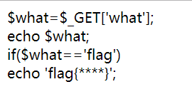</p>
<p>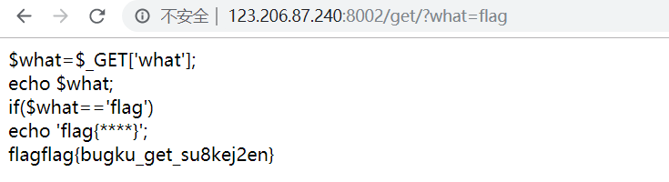</p>
<h4 id="web基础-POST">[<code>web基础$_POST</code>]------------------------------------------------------</h4>
<p>也不解释，直接看代码，需要用到抓包软件</p>
<p></p>
<h4 id="矛盾">[<code>矛盾</code>]------------------------------------------------------</h4>
<p>先看代码</p>
<p></p>
<p>问题出现在 <code>is_numeric</code> 这个函数,<code>is_numeric</code> 是判断 传入的字符串是否为数字。如果是则不输出,不是则输出<code>$num</code>。这个时候我们可以绕过这个函数。</p>
<p>他判断的是数字那么我们给他加点字符串 <code>?num=1a</code>，则绕过了第一个<code>if</code>判断，并跳到了第二个<code>if</code>判断。</p>
<p>然后他现在直接显示出了flag.</p>
<p></p>
<h4 id="web3">[<code>web3</code>]---------------------------------------------------</h4>
<p>他会一直弹窗出来。不知道为什么我的Chrome不会跳出来。</p>
<p>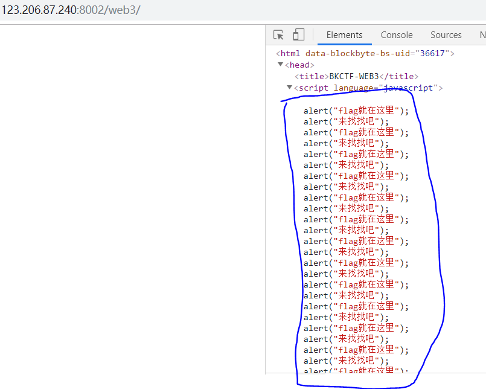</p>
<p>接着我们直接看源码F12  或者 Ctrl+U，发现最下面有一个被注释的html编码</p>
<p>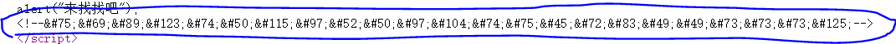</p>
<p>我的方法是，编写到文本，换html格式打开。</p>
<p>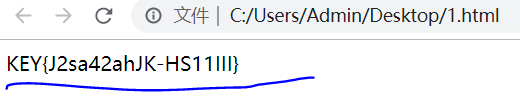</p>
<p>解码就出来了.</p>
<h4 id="域名解析">[<code>域名解析</code>]-------------------------------------------------</h4>
<p></p>
<p>修改hosts访问 flag.baidu.com即可.</p>
<ul>
<li>
<p>hosts位置</p>
<p>windows：</p>
<p>C:\Windows\System32\drivers\etc</p>
<p>linux:</p>
<p>/etc/hosts</p>
</li>
</ul>
<h4 id="你必须让他停下来">[<code>你必须让他停下来</code>]--------------------------------------------</h4>
<p>打开网址发现他一直刷新。二话不说直接上Burpsuite抓包，并放到Repeater(Ctrl+R)。</p>
<p>多Go几遍就能看到flag了</p>
<p></p>
<h4 id="本地文件包含">[<code>本地文件包含</code>]--------------------------------------------------</h4>
<p><strong>网站进不去。放弃.</strong></p>
<h4 id="变量1">[<code>变量1</code>]------------------------------------------------------</h4>
<p>先看审计代码，发现最下面有两个$$args</p>
<p></p>
<p>$$   容易引发变量覆盖</p>
<p>思考。我们直接让他全部值显示出来。使用全局变量<code>$GLOBALS</code></p>
<p>我们直接给他 全局变量<code>$GLOBALS</code>传参进去,args=GLOBALS</p>
<p>tips:关于全局变量https://www.runoob.com/php/php-superglobals.html</p>
<p></p>
<h4 id="web5">[<code>web5</code>]----------------------------------------------------</h4>
<p>输入字符串,啥东西都没有</p>
<p>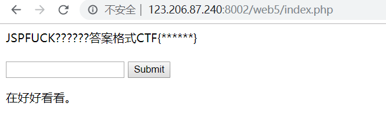</p>
<p>直接看看源码F12 或者 Ctrl+U</p>
<p>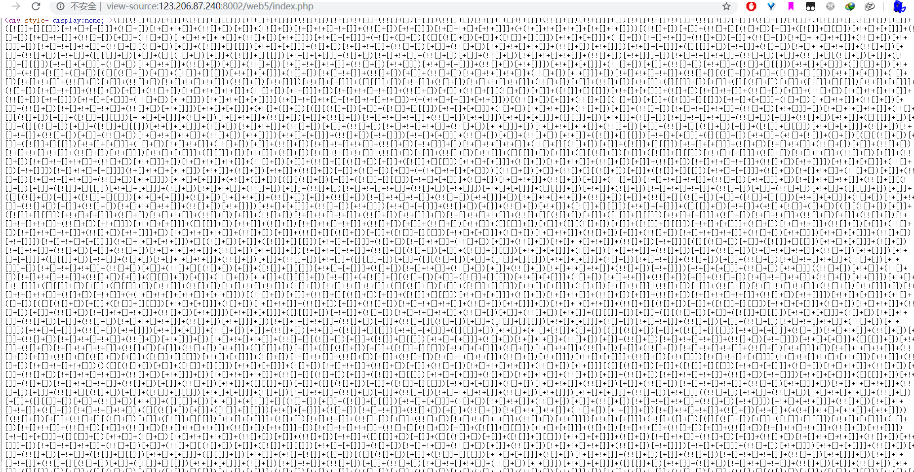</p>
<p>发现这一串看不懂的编码。这种编码是JSFUCK属于一直 加密方式</p>
<p>tips:原理<a href="https://blog.csdn.net/qq_36539075/article/details/79946099" target="_blank" rel="noopener">https://blog.csdn.net/qq_36539075/article/details/79946099</a></p>
<p>直接F12在Console里粘贴</p>
<p>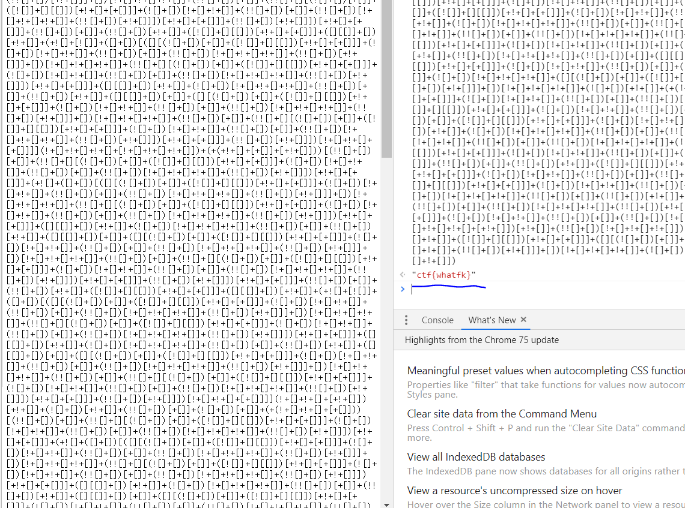</p>
<h4 id="头等舱">[<code>头等舱</code>]------------------------------------------------------</h4>
<p>什么也没有。</p>
<p></p>
<p>在看下头等舱。就能猜测到他flag肯定在 请求头那边，于是直接上抓包软件，并GO一遍看看</p>
<p></p>
<p>拿到flag！</p>
<h4 id="网站被黑">[<code>网站被黑</code>]------------------------------------------------------</h4>
<p>打开网站。好炫啊。还会跟着鼠标动，好！偷代码下来了</p>
<p>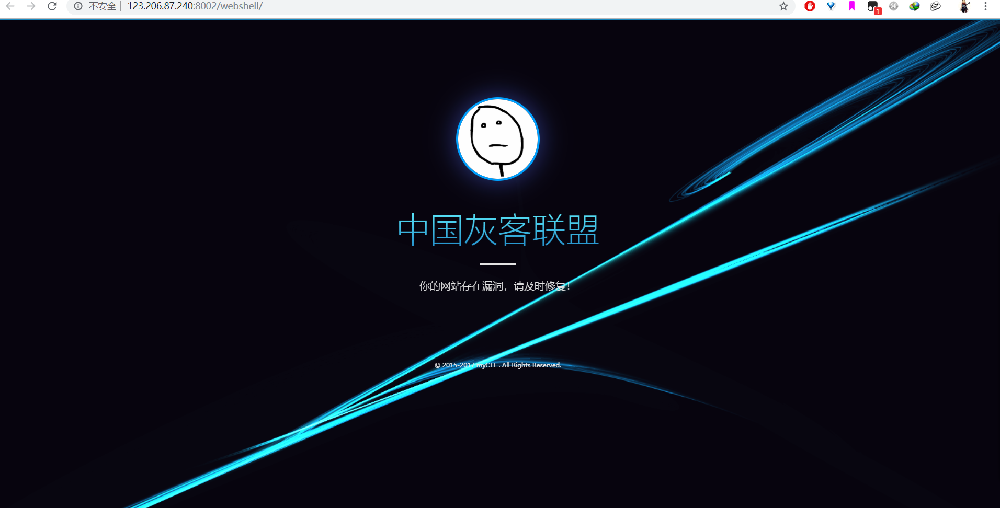</p>
<p>啥也没提示。直接上御剑扫描找到一个。<strong>shell的路径</strong> 123.206.87.240:8002/webshell/shell.php</p>
<p>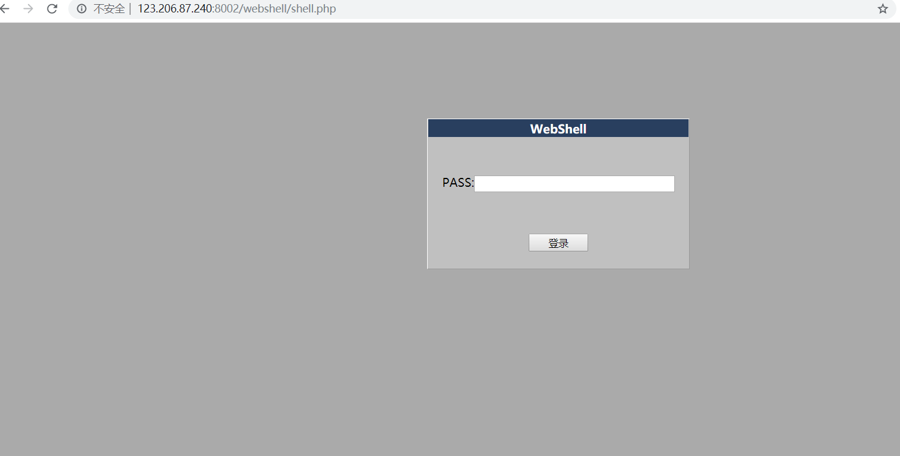</p>
<p>二话不说直接上爆破Burp Suite</p>
<p>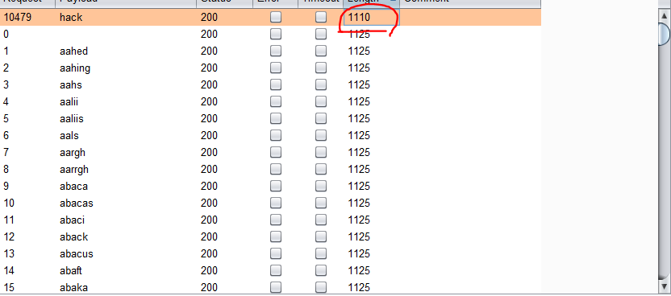</p>
<p>输入上去</p>
<p>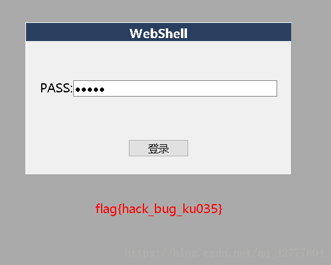</p>
<p>GET到flag</p>
<h4 id="管理员系统"><strong>[<code>管理员系统</code>]------------------------------------------------------</strong></h4>
<p>打开发现是一个登入界面。尝试使用SQL万能密码登入</p>
<p></p>
<p>失败了。IP被禁止访问。</p>
<p></p>
<p>于是打开抓包软件在请求头上添加上**<code>X-Forwarded-For 127.0.0.1</code>**</p>
<p>再试试万能密码</p>
<p></p>
<p>密码错误。那么我们来看看源码F12</p>
<p></p>
<p>看到源码中有一个被注释的base64的编码。于是解密出来看是<strong>test123</strong>那么用户名是**<code>admin</code><strong>密码是</strong><code>test123</code>**</p>
<p><strong>tips:不定时更新。每更新十个题目</strong></p>

        </div>

    </div>

    

    

    

    
<div class="article-copyright hairline">
  <p>
    本作品采用 <a rel="license" href="http://creativecommons.org/licenses/by-nc-nd/4.0/">知识共享署名-非商业性使用-禁止演绎 4.0 国际许可协议</a> 进行许可。
  </p>
</div>


    

    
<nav class="article-nav">
  
    <a href="/2019/06/20/本地NAS扫描/" id="article-nav-newer" class="article-nav-link-wrap">
      <div class="article-nav-caption">下一篇</div>
      <div class="article-nav-title">
        
          PythonScript:Search_loaclNAS
        
      </div>
    </a>
  
  
    <a href="/2019/02/02/Termux安装/" id="article-nav-older" class="article-nav-link-wrap">
      <div class="article-nav-caption">上一篇</div>
      <div class="article-nav-title">Termux安装笔记</div>
    </a>
  
</nav>


    <section class="share">
        <div class="share-title">分享</div>
        <a class="share-item" target="_blank"
            href="https://twitter.com/share?text=【BugKuCTF】靶场部分writeup - Hu5k7's Blog&url=https://hu5k7.github.io/2019/05/20/BugKuCTF/">
            <box-icon type='logo' name='twitter'></box-icon>
        </a>
        <a class="share-item" target="_blank"
            href="https://www.facebook.com/sharer.php?title=【BugKuCTF】靶场部分writeup - Hu5k7's Blog&u=https://hu5k7.github.io/2019/05/20/BugKuCTF/">
            <box-icon name='facebook-square' type='logo' ></box-icon>
        </a>
        <!-- <a class="share-item" target="_blank"
            href="https://service.weibo.com/share/share.php?title=【BugKuCTF】靶场部分writeup - Hu5k7's Blog&url=https://hu5k7.github.io/2019/05/20/BugKuCTF/&pic=">
            <div class="n-icon n-icon-weibo"></div>
        </a> -->
    </section>

</article>


</div>
        </section>
      </section>
      <aside class="sidebar">
        <div class="widget">
          

  
  <div class="widget-wrap widget-recent-posts">
    <div class="widget-title"><span>Recent Posts</span></div>
    <div class="widget-inner">
      <ul>
        
          <li>
            <a href="/2020/07/10/Mark-OnceBuild-CrossC2Object/">Mark_OnceBuild_CrossC2Object</a>
          </li>
        
          <li>
            <a href="/2020/05/14/iseacms代码审计入门级/">iseacms代码审计入门级</a>
          </li>
        
          <li>
            <a href="/2020/04/10/takeshell-01/">Mark-once-WebShell_01</a>
          </li>
        
          <li>
            <a href="/2020/02/24/MSSQL盲注/">MSSQL_Blind_Injection</a>
          </li>
        
          <li>
            <a href="/2020/02/20/Oracle注入/">Oracle Injection</a>
          </li>
        
      </ul>
    </div>
  </div>


  
  <div class="widget-wrap widget-cate">
    <div class="widget-title"><span>Categories</span></div>
    <div class="widget-inner">
      <ul class="category-list"><li class="category-list-item"><a class="category-list-link" href="/categories/Bash/">Bash</a></li><li class="category-list-item"><a class="category-list-link" href="/categories/CTF/">CTF</a><ul class="category-list-child"><li class="category-list-item"><a class="category-list-link" href="/categories/CTF/CTF-Pwn-Note/">CTF-Pwn-Note</a></li><li class="category-list-item"><a class="category-list-link" href="/categories/CTF/CTF-Reverse-Note/">CTF-Reverse-Note</a></li><li class="category-list-item"><a class="category-list-link" href="/categories/CTF/CTF-Web-Note/">CTF-Web-Note</a></li></ul></li><li class="category-list-item"><a class="category-list-link" href="/categories/Note/">Note</a></li><li class="category-list-item"><a class="category-list-link" href="/categories/Python/">Python</a></li><li class="category-list-item"><a class="category-list-link" href="/categories/vulnhub/">vulnhub</a></li></ul>
    </div>
  </div>


  
  <div class="widget-wrap widget-archive">
    <div class="widget-title"><span>Archive</span></div>
    <div class="widget-inner">
      <ul class="archive-list"><li class="archive-list-item"><a class="archive-list-link" href="/archives/2020/07/">2020</a></li><li class="archive-list-item"><a class="archive-list-link" href="/archives/2019/12/">2019</a></li><li class="archive-list-item"><a class="archive-list-link" href="/archives/2018/12/">2018</a></li></ul>
    </div>
  </div>


        </div>
        <div id="backtop"><i class="icon icon-arrow-up"></i></div>
      </aside>
    </div>
  </div>

  <footer class="footer">
    <div class="footer-inner">
        <div class="footer-info">
            <span>&copy; 2013 - 2020 Hu5k7&#39;s Blog</span>
        </div>
        <div class="footer-powered">
            <a href="https://github.com/lh1me/hexo-theme-aomori" target="_blank">Aomori</a> Theme · Powered By Hexo
        </div>
    </div>
</footer>


<script src="/dist/build.js?1.5.0"></script>
<script src="/dist/custom.js?1.5.0"></script>


<!-- 百度链接提交 -->
<script>
    (function () {
        var bp = document.createElement('script');
        var curProtocol = window.location.protocol.split(':')[0];
        if (curProtocol === 'https') {
            bp.src = 'https://zz.bdstatic.com/linksubmit/push.js';
        }
        else {
            bp.src = 'http://push.zhanzhang.baidu.com/push.js';
        }
        var s = document.getElementsByTagName("script")[0];
        s.parentNode.insertBefore(bp, s);
    })();
</script>


<script src="/live2dw/lib/L2Dwidget.min.js?094cbace49a39548bed64abff5988b05"></script><script>L2Dwidget.init({"pluginModelPath":"assets/","model":{"jsonPath":"/live2dw/assets/miku.model.json"},"display":{"position":"left","width":200,"height":350},"mobile":{"show":false},"log":false,"pluginJsPath":"lib/","pluginRootPath":"live2dw/","tagMode":false});</script></body>
</html>